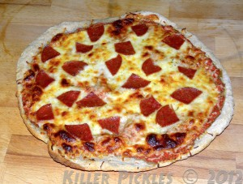

Chewy thin-crust pizzas are popular here in Portland,OR and I've been searching a long time for a recipe that would replicate restaurant crusts.
This delicious recipe will blow your socks off!
Ingredients
Sourdough Pizza Crust
Makes one 12 inch pizza
- 1 and a half cup sourdough starter
- 1 and a half cup bread flour
- 1 teaspoon salt
- 1 teaspoon olive oil
Steps
- Preheat oven to 500 degrees.
- Mix ingredients together, roll to size and place on pizza pan.
- Let dough rest for 10 minutes.
- Bake on lower-middle rack for 5 minutes.
- remove from oven and add your choice of base and toppings.
- Put back in the oven and bake for 10 more minutes untill done.